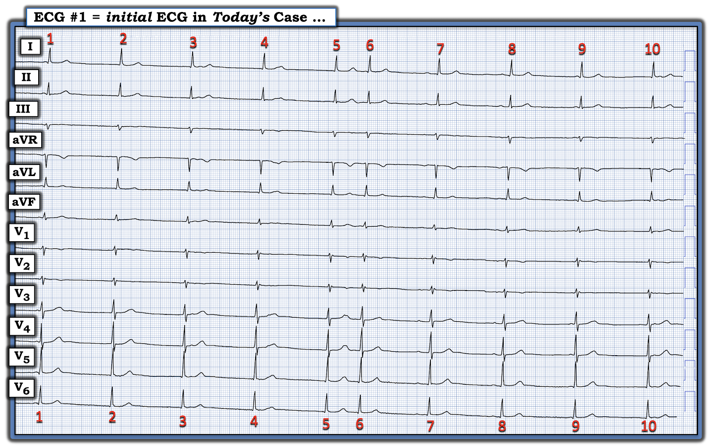
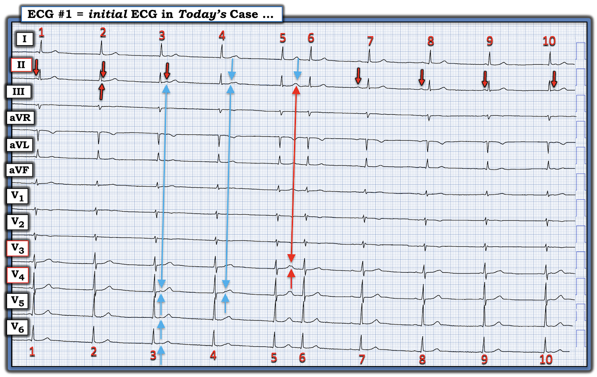
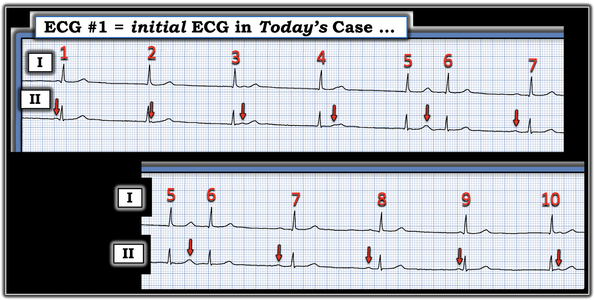
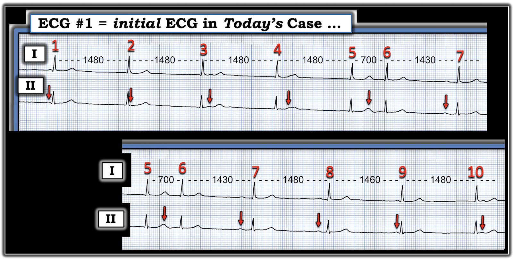
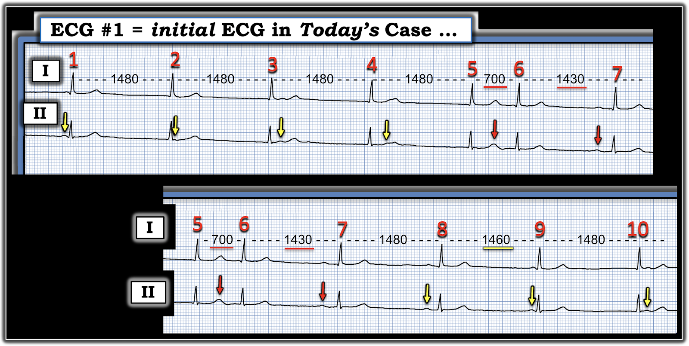
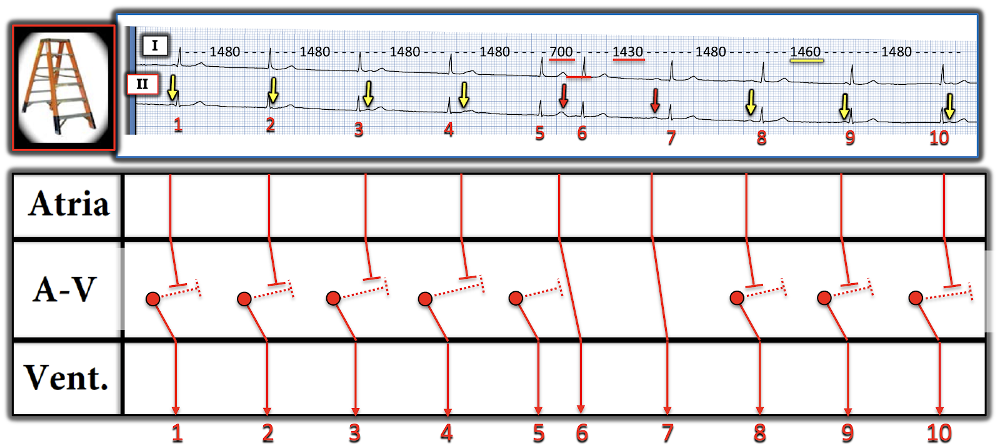
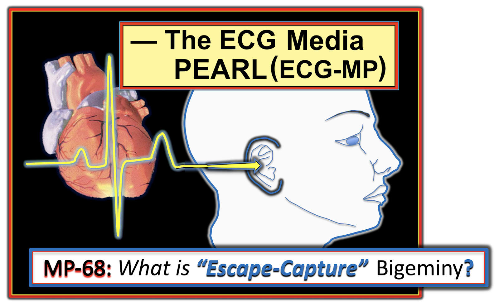

ECG Blog #500 — Bạn có giải được CA BỆNH này không?
=================================
LƯU Ý: Tôi bắt đầu viết ECG Blog từ năm 2010 — và đây là ca thứ 500 của ECG Blog! Lý do tôi để dành ca này cho số #500 — là vì nó khó — nhưng theo tinh thần của thám tử hư cấu lừng danh Sherlock Holmes — phép suy luận logic (điều mà chúng ta thường phải vận dụng khi giải một rối loạn nhịp phức tạp) cho phép chúng ta đi tới câu trả lời hợp lý nhất. BẠN có sẵn sàng nhận thử thách không?
=================================
Điện tâm đồ ở Hình 1 là của một bệnh nhân lớn tuổi kể đã có 2 lần ngất, nhưng không đau ngực. Ông đang dùng một thuốc chẹn ß và một thuốc chẹn kênh calci.
CÂU HỎI:
- Nhịp ở Hình 1 là gì?
- Nguyên nhân của nhịp này là gì?
- Điều trị được khuyến cáo là gì?
- Điểm cộng: Bạn có thể giải thích từng nhát trong 10 nhát không?


SUY NGHĨ BAN ĐẦU CỦA TÔI:
Bệnh sử — cùng một cái nhìn 2 giây vào bản ghi này giúp chúng ta bắt đầu!
- Bệnh nhân "lớn tuổi" — đến khám với một nhịp rõ ràng chậm và không hoàn toàn đều (tần số tim chung dưới 50/phút) — và đang dùng thuốc làm chậm tần số tim ( = thuốc chẹn ß — và có lẽ cả verapamil hoặc diltiazem, là các thuốc chẹn calci chính có tác dụng làm chậm tần số tim).
- ĐIỂM THEN CHỐT (PEARL) #1: Với bệnh sử này — nếu tần số tim rất chậm không phải do thuốc làm chậm tần số tim — và thiếu máu cục bộ/nhồi máu cấp, suy giáp và ngưng thở khi ngủ không phải là yếu tố góp phần — thì nhiều khả năng có một phần SSS (hội chứng suy nút xoang – Sick Sinus Syndrome) đang tham gia (Xem ECG Video bên dưới trong PHẦN BỔ SUNG để ôn lại các đặc điểm của SSS).
Về nhịp ...
Lý do ca này khó đến vậy — là vì sóng P rất nhỏ!
Hãy NHÌN LẠI điện tâm đồ ở Hình 1:
- Tập trung vào chuyển đạo II — vì đây là chuyển đạo tốt nhất để tìm sóng P xoang (tức là, Nếu thấy sóng P dương ở chuyển đạo II với hình thái sóng P tương tự nhau ở nhiều nhát — điều này nhiều khả năng phản ánh một nhịp xoang nền).
- Trong 10 nhát của bản ghi này, có nhát nào mà chúng ta biết chắc là có sóng P dương đi trước ở chuyển đạo II này không?
- Có sóng P nào mà chúng ta nghĩ là có thể đang được dẫn truyền không?
- Có sóng P nào mà chúng ta biết chắc là không được dẫn truyền không?
- ĐIỂM THEN CHỐT (PEARL) #2: Nguyên tắc Sherlock Holmes mà chúng ta áp dụng khi đọc rối loạn nhịp phức tạp rất đơn giản: Hãy bắt đầu từ những gì bạn biết chắc là đúng. Khi điều này đã được xác lập — chúng ta có thể lần dần tới việc đánh giá những khía cạnh của bản ghi phức tạp này mà chúng ta chưa chắc chắn.
=================================
Những gì tôi biết ngay là đúng:
Dù rất nhỏ — tôi đã nhanh chóng nhận ra được một số sóng P ở Hình 1. Tôi đã đánh dấu những gì mình thấy ngay ở Hình 2:
- 4 mũi tên ĐỎ cuối cùng ở chuyển đạo II rõ ràng đang chỉ ra các sóng P xoang (tức là, Dù có biên độ cực thấp — cả 4 sóng P này đều dương và có cùng hình thái sóng P).
- Khoảng PR trước các nhát #7,8,9 ngắn dần và khác nhau ở mỗi nhát. Chúng ta biết chắc khoảng PR trước nhát #9 là quá ngắn để dẫn truyền.
- Ngoài ra — rõ ràng sóng P có mũi tên ĐỎ cuối cùng ở chuyển đạo II không thể được dẫn truyền, vì nó xuất hiện sau nhát #10.
- Vì khoảng PR trước các nhát #7 và 8 khác nhau (tức là, Khoảng PR trước nhát #8 ngắn hơn một chút so với khoảng PR trước nhát #7) — điều này có nghĩa là nhiều nhất — chỉ một trong hai sóng P này có thể đang được dẫn truyền (tùy theo khoảng PR “bình thường” khi dẫn truyền của bệnh nhân này là bao nhiêu).
Khi đã biết điện tâm đồ hôm nay kết thúc bằng 4 sóng P xoang khá đều ( = 4 mũi tên ĐỎ cuối cùng) — thật hợp lý khi nghi ngờ rằng các sóng P xoang nền có thể hiện diện suốt bản ghi này. Điều này đặt ra cho chúng ta nhiệm vụ kiểm chứng giả thuyết đó, luôn nhớ rằng sóng P xoang trong bản ghi này nhỏ đến mức nào.
- Điểm MẤU CHỐT: Bản ghi này hầu như không có nhiễu. Vì vậy — ngay cả những khác biệt nhỏ về hình thái nhiều khả năng là "thật" — và có lẽ là biểu hiện của hoạt động nhĩ bị ẩn.
- Với điều này trong đầu, khi nhìn vào phần đầu của điện tâm đồ #1 — hẳn đã rõ rằng mũi tên ĐỎ thứ 1 ở chuyển đạo II chỉ ra một sóng P xoang, dù khoảng PR quá ngắn để dẫn truyền.
- ĐIỂM THEN CHỐT (PEARL) #3: Biết được khoảng P-P từ 4 sóng P có mũi tên ĐỎ cuối cùng ở chuyển đạo II — cho chúng ta biết đại khái nên tìm ở đâu các sóng P xoang khác ở phần đầu của dải nhịp chuyển đạo II.
- Vì lý do này — tôi cho rằng biến dạng rất nhỏ của đường nền thấy ngay sau nhát #2 ở chuyển đạo II (tức là, giữa 2 mũi tên ĐỎ ngay sau nhát #2) nhiều khả năng là sóng P xoang thứ 2 trong bản ghi này (dù sóng P này bị ẩn một phần trong phần cuối của phức bộ QRS đứng trước nó).
- ĐIỂM THEN CHỐT (PEARL) #4: Đây chính là lúc việc dùng các chuyển đạo ghi đồng thời trở nên rất hữu ích để xác nhận nghi ngờ của chúng ta về hoạt động nhĩ bổ sung. Áp dụng khái niệm này cho phép tôi xác nhận rằng chỗ lệch dương nhỏ thấy ngay sau QRS của nhát #3 ở chuyển đạo II ( = mũi tên ĐỎ thứ 3 ở chuyển đạo này) là thật — vì đường thời gian dọc màu XANH bên dưới nó cho thấy những chỗ lệch nhỏ tương tự ở cùng thời điểm trong chu kỳ ngay sau nhát #3 ở các chuyển đạo V4,V5,V6 ghi đồng thời.
- Một biến dạng đặc biệt kín đáo sau đó xuất hiện gần đầu sóng T của nhát #4 ở chuyển đạo II (tức là, giữa 2 mũi tên XANH nhạt ở chuyển đạo này). Đối chiếu với đường thời gian dọc màu XANH thứ 2 xác nhận rằng biến dạng kín đáo này của sóng T nhát #4 ở chuyển đạo II quả thực là sóng P xoang thứ 4 (vì một biến dạng kín đáo tương tự của sóng T nhát #4 xuất hiện ở cùng thời điểm ở chuyển đạo V4).
- Việc còn lại lúc này — là xác nhận sóng P xoang thứ 5 ở chuyển đạo II nằm ở đâu (và đường thời gian dọc màu ĐỎ làm điều này bằng cách chỉ ra một biến dạng sóng T tương tự ở cùng thời điểm sau nhát #5 ở chuyển đạo V3).


Nhát nào ở Hình 2 xuất hiện sớm hơn dự kiến?
Giờ hãy LÙI LẠI MỘT CHÚT. Hãy xem những gì chúng ta đã xác lập được ở Hình 2?
- Chúng ta biết chắc nhịp này là nhịp trên thất (vì QRS hẹp ở mọi chuyển đạo trong suốt bản ghi).
- Có một nhịp nhĩ khá đều ( = các sóng P được tô màu ở dải nhịp chuyển đạo II).
- Phần lớn trong 10 nhát của nhịp này không phải nhát dẫn truyền từ xoang. Chúng không thể là như vậy — vì khoảng PR trước các nhát #1 và #9 quá ngắn để dẫn truyền — và các sóng P gần nhất với các nhát #2,3,4,5 và #10 đều xuất hiện sau QRS.
- Điều này cho chúng ta biết: i) Có phân ly nhĩ thất ít nhất ở một phần bản ghi này — vì các sóng P gần nhất với các nhát #1,2,3,4,5 và #9,10 không liên quan với phức bộ QRS kế cận; — và, ii) 7 nhát này (#1,2,3,4,5; và #9,10) — đều là nhát thoát bộ nối xuất hiện với tần số thoát bộ nối phù hợp, trong khoảng 40-50/phút.
- Cuối cùng (khi lùi lại nhìn tổng thể bản ghi này một chút) — Chúng ta có thể thấy nhịp thất ở Hình 2 gần như đều — ngoại trừ một nhát.
CÂU HỎI:
- Nhát nào ở Hình 2 xuất hiện sớm hơn dự kiến?
- Tại sao nhát này lại xuất hiện sớm?
TRẢ LỜI:
- Nhát #6 ở chuyển đạo II rõ ràng xuất hiện sớm hơn dự kiến.
- ĐIỂM THEN CHỐT (PEARL) #5: Khi có một nhịp xoang nền đều (hoặc ít nhất là khá đều), sao cho mọi sóng P xoang đều "đúng lúc" (như các mũi tên sóng P tô màu ở Hình 2) — việc thấy một nhát xuất hiện sớm hơn dự kiến gợi ý mạnh rằng nhát này được dẫn truyền. Điều này cho chúng ta biết nhát #6 ở Hình 2 là một "nhát bắt được" (capture beat) đang được dẫn truyền bởi sóng P xoang "đúng lúc" đứng trước nó!
=================================
Hãy phóng to dải nhịp chuyển đạo II:
Tại thời điểm này của phân tích — tôi sẽ phóng to dải nhịp chuyển đạo II mà chúng ta đang tập trung vào, vì điều này sẽ giúp việc quan sát dễ dàng hơn rất nhiều.
- Tôi đã làm điều này ở Hình 3 — trong đó tôi chia bản ghi 10 nhát từ Hình 2 thành 2 phần.


Hãy định hướng nhịp ở Hình 3:
- Các mũi tên ĐỎ chỉ ra nhịp chậm xoang nền, kèm một phần loạn nhịp xoang.
- Như đã mô tả ở trên — các nhát #1,2,3,4,5 đều là nhát thoát bộ nối với tần số 40 mấy nhát/phút — và nhát #6 là một nhát bắt được từ xoang.
- Dải nhịp kết thúc bằng 2 nhát thoát bộ nối nữa ( = các nhát #9,10).
- Như vậy còn lại các nhát #7,8 mà chúng ta chưa xác định.
ĐIỂM THEN CHỐT (PEARL) #6: Nếu mục tiêu của bạn là đọc được các rối loạn nhịp phức tạp một cách tự tin — thì việc dùng compa đo là thiết yếu!
- Nhịp thoát thường đều (hoặc ít nhất là gần như đều). Hiểu được sự khôn ngoan trong câu này là MẤU CHỐT để xác định nhát nào trong 2 nhát còn lại (#7 hay #8) là nhát dẫn truyền từ xoang.
Tôi minh họa khái niệm trên ở Hình 4 — trong đó tôi trình bày số đo của tôi cho từng khoảng R-R trong bản ghi hôm nay.
- CÂU HỎI: Các số đo khoảng R-R này cho bạn biết gì về các nhát #7 và 8?


TRẢ LỜI:
- Lưu ý rằng khoảng R-R đứng trước mỗi nhát thoát bộ nối ở Hình 4 là hằng định ở mức 1480 mili giây, ngoại trừ một dao động nhẹ (còn 1460 msec.) trước nhát bộ nối #9.
- Điểm MẤU CHỐT: Khoảng R-R trước nhát #7 ngắn hơn dự kiến ( = 1430 msec. — thay vì 1480 msec.). Theo ĐIỂM THEN CHỐT #5, điều này cho chúng ta biết nhát #7 là nhát dẫn truyền từ xoang — trong khi nhát #8 (có khoảng PR ngắn hơn một chút) hẳn là một nhát thoát bộ nối khác.
Tôi minh họa các phát hiện trên ở Hình 5 — trong đó các sóng P có mũi tên ĐỎ ở chuyển đạo II chỉ ra 2 nhát dẫn truyền từ xoang.
- Các sóng P có mũi tên VÀNG chỉ ra các sóng P "đúng lúc" nhưng không được dẫn truyền.
- Lưu ý ở Hình 5 rằng khoảng PR trước nhát #7 dài hơn 1 ô lớn một chút — cho chúng ta biết có blốc AV độ 1 đối với sóng P xoang "đúng lúc" duy nhất này được dẫn truyền bình thường xuống thất.


=================================
Minh họa bằng giản đồ bậc thang:
Để làm rõ các mối liên quan nêu trên — tôi bổ sung ở Hình 6 giản đồ bậc thang (laddergram) mà tôi đề xuất cho bản ghi hôm nay:
- Như đã nêu ở trên — chính các sóng P có mũi tên ĐỎ là được dẫn truyền từ xoang. Mọi nhát khác trong bản ghi này đều là nhát thoát bộ nối. Lý do các nhát bộ nối có thể xuất hiện — là vì trong phần lớn bản ghi này, tần số thoát bộ nối nhanh hơn một chút so với tần số của nhịp chậm xoang.
- Ở Hình 6, các xung động bộ nối được thấy dẫn truyền ngược dòng một đoạn ngắn (các đầu cụt chấm chấm trong Tầng Nút AV).
- Lý do nhát "bắt được" ( = nhát #6) có khoảng PR đi trước dài hơn khoảng PR của nhát #7 dẫn truyền từ xoang — là vì dẫn truyền ngược dòng từ nhát bộ nối #5 làm chậm dẫn truyền của sóng P xoang kế tiếp.
- Sóng P có mũi tên ĐỎ thứ 2 xuất hiện "đúng lúc" — và có thể dẫn truyền xuống thất, dù kèm blốc AV độ 1. Sau đó, tần số sóng P xoang chậm lại — kết quả là tần số thoát bộ nối nhanh hơn một chút lại một lần nữa chiếm quyền chi phối nhịp, tạo ra các nhát #8,9,10 bộ nối.


Tổng hợp lại tất cả:
- Nhịp nền trong ca hôm nay là nhịp chậm xoang và loạn nhịp xoang. Điều này có lẽ đang bị làm nặng thêm do dùng thuốc làm chậm tần số tim (tức là, thuốc chẹn ß và thuốc chẹn calci, nếu thuốc cụ thể được dùng là verapamil hoặc diltiazem).
- Có xu hướng đọc nhịp hôm nay là nhịp thoát bộ nối. Tuy vậy — đây không phải cách đọc tối ưu cho nhịp hôm nay. Thay vào đó, sẽ tốt hơn nếu mô tả nhịp hôm nay là nhịp nền gồm nhịp chậm xoang kèm loạn nhịp xoang — dẫn đến phân ly nhĩ thất và một nhịp bộ nối thoát với thỉnh thoảng có "nhát bắt được" .
- Vì bệnh nhân hôm nay là một người lớn tuổi có 2 lần ngất — ông/bà ấy có thể bị SSS (hội chứng suy nút xoang – Sick Sinus Syndrome). Trong trường hợp này, ngay cả sau khi ngưng các thuốc tác động lên tim và đã loại trừ thiếu máu cục bộ/nhồi máu — suy giáp — tác dụng của thuốc — và ngưng thở khi ngủ — NẾU nhịp ở Hình 6 vẫn tồn tại — bệnh nhân sẽ cần đặt máy tạo nhịp để điều trị SSS.
- ĐIỂM THEN CHỐT (PEARL) #7: Có lẽ cách mô tả súc tích nhất cho nhịp hôm nay — là nói rằng đây là một nhịp "thoát–bắt được" (escape-capture) do nhịp chậm xoang kèm thoát bộ nối (Xem các ĐƯỜNG LINK bên dưới để biết thêm các ví dụ khác về nhịp "thoát–bắt được").
- ĐIỂM THEN CHỐT (PEARL) #8: Phân ly nhĩ thất không phải là một chẩn đoán. Thay vào đó, nó chỉ đơn thuần là sự mô tả việc thiếu liên quan giữa các sóng P xoang "đúng lúc" và các phức bộ QRS kế cận. Phân ly nhĩ thất có thể thoáng qua (kéo dài chỉ một nhát) — hoặc — có thể kéo dài suốt cả dải nhịp. Nhưng dù có phân ly nhĩ thất ở phần lớn các nhát trong điện tâm đồ hôm nay — không có blốc AV độ 2 lẫn blốc AV độ 3. Thay vào đó — đây là phân ly nhĩ thất do "mặc định" (default) của ổ tạo nhịp nút xoang khi nó chậm xuống dưới tần số của nhịp thoát bộ nối (Xem ECG Video thứ 3 trong PHẦN BỔ SUNG bên dưới để biết thêm về 3 Nguyên nhân của Phân ly nhĩ thất).
==================================
Lời cảm ơn: Xin cảm ơn Abdallah Sbai Sassi (từ Rabat, Morocco) đã chia sẻ ca bệnh và bản ghi này.
==================================
==============================
Các bài ECG Blog liên quan khác đến ca hôm nay:
- ECG Blog #185 — Ôn lại Cách tiếp cận Ps, Qs, 3R để đọc nhịp một cách hệ thống.
- ECG Blog #188 — Ôn lại cách đọc và vẽ giản đồ bậc thang (kèm ĐƯỜNG LINK tới hơn 100 ca có giản đồ bậc thang — nhiều ca có minh họa tuần tự từng bước) — Xem ĐƯỜNG LINK truy cập nhanh ở Menu phía trên cùng của mọi trang trong Blog này!
- ECG Blog #256 — Nhịp đôi thoát–bắt được (kèm thoát bộ nối và "bắt được" từ dẫn truyền ngược dòng — kèm các AUDIO Pearl về "Escape-Capture" và về "hội chứng suy nút xoang" cùng với giản đồ bậc thang từng bước).
Các bài khác về nhịp "thoát–bắt được":
- ECG Blog #349 — một ví dụ khác về thoát–bắt được kèm giản đồ bậc thang từng bước.
- ECG Blog #163 — Nhịp đôi thoát–bắt được (do nhịp chậm xoang dẫn đến thoát bộ nối — và có thể kèm blốc SA).
- ECG Blog #315 — Nhịp đôi thoát–bắt được (do nhịp chậm xoang rõ rệt).
- ECG Blog #144 — Nhịp đôi thoát–bắt được (do blốc AV độ 2 chưa rõ mức độ nặng).

PHẦN BỔ SUNG:
- 2 ECG Video này đề cập các khái niệm MẤU CHỐT trong ca hôm nay:


ECG Media PEARL #68 (6:15 phút Audio) — Ôn lại ý nghĩa của thuật ngữ "thoát–bắt được" (Escape-Capture) (đây là một dạng đặc biệt của nhịp đôi (bigeminal)).

ECG Media PEARL #69 (2:45 phút Audio) — Ôn lại các dấu hiệu điện tâm đồ của SSS = hội chứng suy nút xoang (Sick Sinus Syndrome) (trích từ Audio Pearl trình bày trong Blog #252).

ECG Media PEARL #9 (4:45 phút) — ôn lại 3 Nguyên nhân của phân ly nhĩ thất — và nhấn mạnh vì sao phân ly nhĩ thất không giống với blốc AV hoàn toàn.